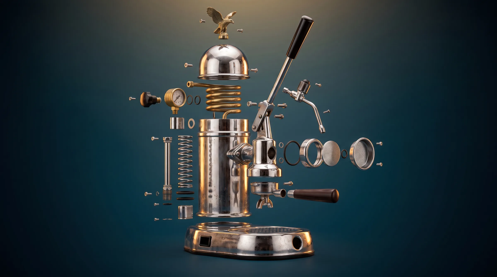
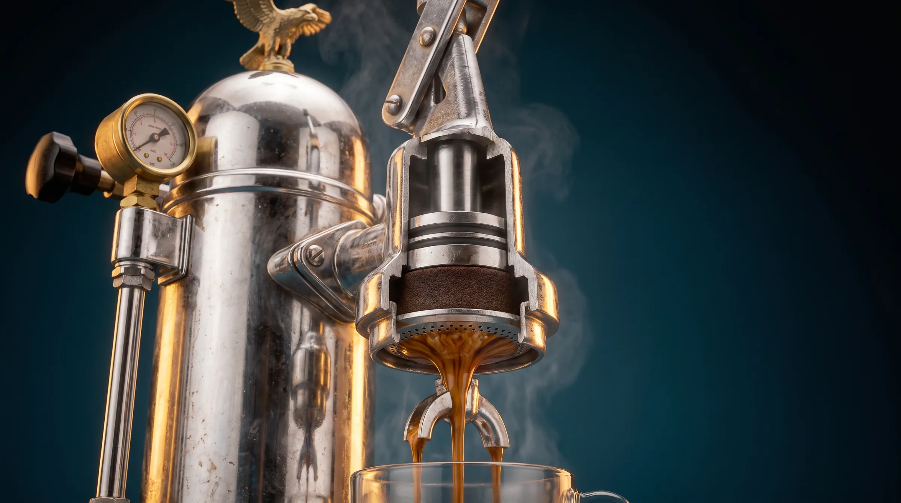
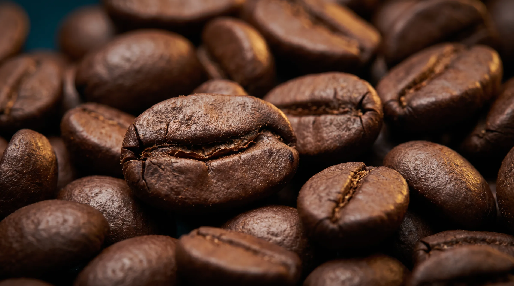
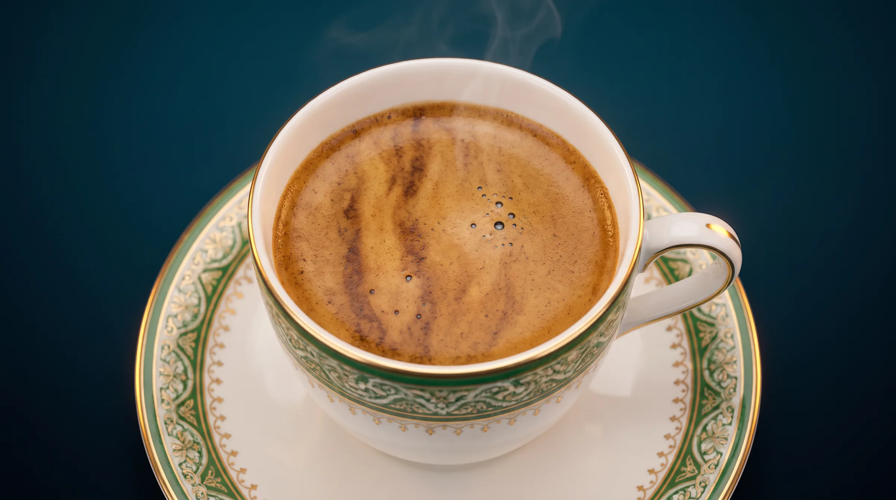

Più dolce e profumata. È la base della miscela napoletana.




Gran Caffè Gambrinus · Il rito
Dentro
la leva.
Scorri. Smontiamo la macchina pezzo per pezzo, fino al chicco.
01 · M-acchinaA Napoli
A Napoli
si tira la leva.
Altrove regna la macchina a erogazione continua. Qui i baristi preferiscono la leva: più forza, più caffè insieme, più libertà per chi la guida.
02 · Pezzo per pezzoOgni pezzo
Ogni pezzo
ha un compito.
Caldaia, molla, pistone, gruppo, filtro. Il macchinista li conosce uno per uno: la M-anutenzione è una delle cinque regole.
03 · Dentro il gruppoAcqua, forza,
Acqua, forza,
caffè.
La leva carica la molla, il pistone spinge l'acqua calda attraverso il caffè pressato. Esce denso, con la crema scura.
04 · M-acinaIl giusto
Il giusto
punto di macina.
Né troppo fine né troppo grosso. Solo così il caffè è fatto ad arte.
05 · M-iscelaIl chicco.
L'aquila
La cupola
Il manometro
La resistenza
La leva
La lancia vapore
La molla
Il pistone
La caldaia
Doccia e filtro
Il portafiltro
Il pistone
Il caffè pressato
La doccia
L'espresso
Il chicco.
Tostato a lungo.
In minore percentuale: più caffeina, più corpo, una crema più densa.
Più lunga e a temperatura più alta che altrove. Da qui il colore scuro della crema.
Cioccolato, pane tostato, nocciola. Le percentuali? Restano un segreto.
01 / 05Scorri
Le cinqueM.
Le regole dell'espresso napoletano, codificate dai maestri caffettieri. Le racconta Michele Sergio, terza generazione della famiglia.
M
Miscela
Arabica e Robusta in minore percentuale, tostatura lenta ad alta temperatura. Gusto forte, intenso, crema densa.
M
Macchina
La leva: più potente e rapida, permette di preparare più caffè insieme. A Napoli è ancora lei la regina del banco.
M
Macina
Il «giusto punto di macina»: i chicchi né troppo fini né troppo grossi.
M
Mano
Quella del barista. Esperienza, passione e curiosità hanno fatto dei macchinisti napoletani i più preparati.
M
Manutenzione
La pulizia della macchina e di ogni suo componente. Ogni giorno.
Fonte: Michele Sergio, «Le cinque regole per un espresso napoletano perfetto», Il Roma, 25 marzo 2018 · grancaffegambrinus.com

E poi,due segreti.
90%
Tanto della tazzina è acqua. A Napoli arriva anche dalle sorgenti del Serino, nota dai tempi dei Romani per la sua purezza.
Bollente
Il caffè Gambrinus a casa
La tazzina si serve rovente: il caffè resta alla temperatura giusta, e chi lo beve non può farlo distrattamente.